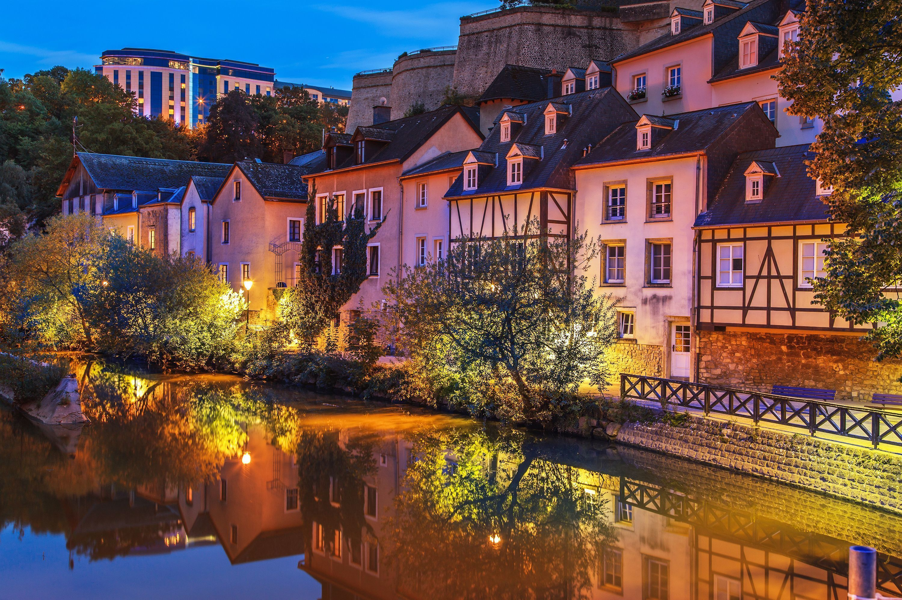
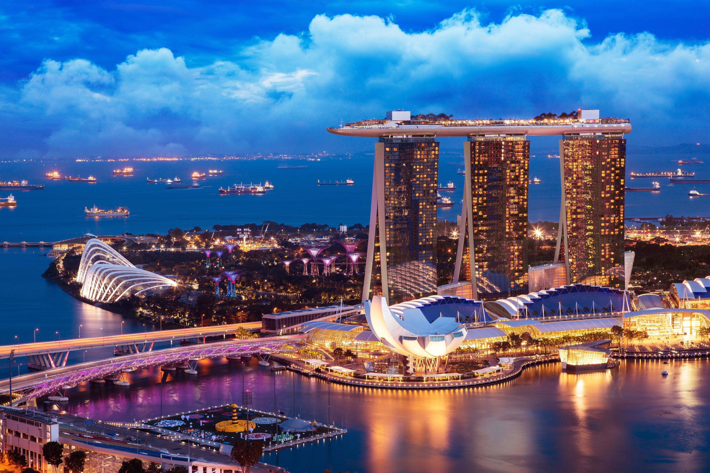
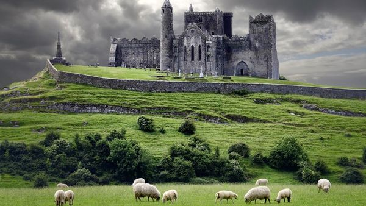
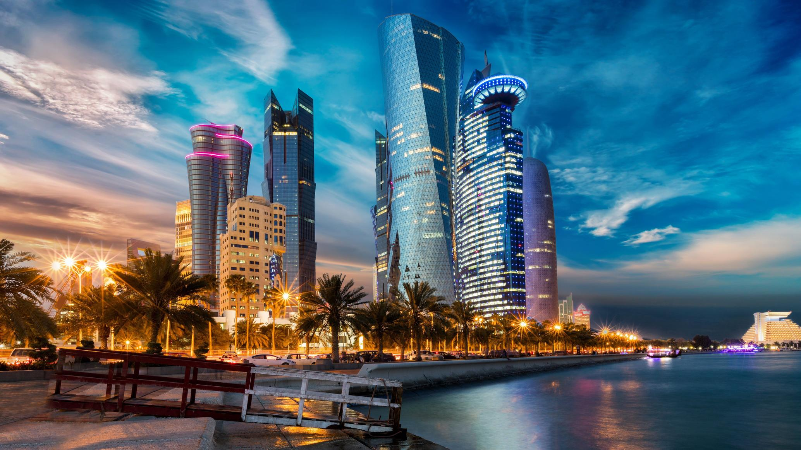
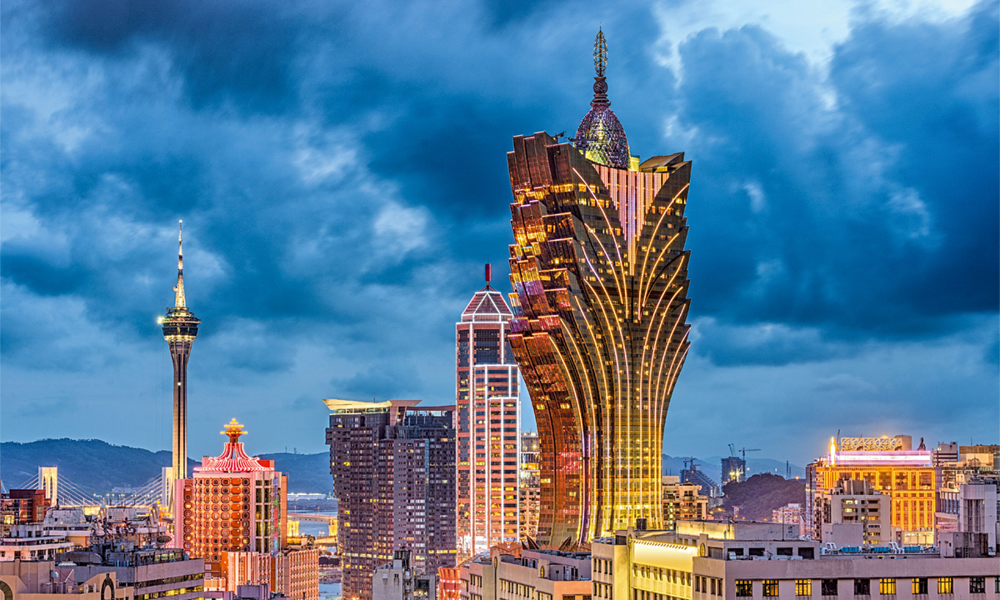

Территория этого государства — оффшорная зона. Так, компании-нерезиденты платят налоги только с доходов, полученных в герцогстве. Это делает Люксембург одной из лучших стран для ведения бизнеса и, соответственно, богатейшей. Доля ВВП-ППС насчитывает 140 694 USD.
Значительные доходы Сингапура составляет экспорт электроники и лекарств. Однако почти 70% ВВП города-государства приходится на сектор услуг. Секрет успеха одной из самых богатых стран мира вновь стоит искать в комфортных условиях для бизнеса. Доля ВВП-ППС государства равняется 131 580 USD.
Попасть в рейтинг самых богатых стран мира Ирландии помогли развитое сельское хозяйство, а также пищевая и текстильная промышленность. Кроме того, в государстве есть крупные лекарственные заводы, и производится множество медицинского оборудования. Тем временем, в Ирландии живет всего 1,5 млн человек. А вот доля ВВП-ППС составляет ВВП на 124 596 USD.
Это государство в пустыне входит в топ богатейших стран мира, в первую очередь, благодаря экспорту газа и нефти. Еще одна важная статья ВВП — логистика. Так, катарские глубоководные порты обеспечивают четверть грузопотока на Ближний Восток, а аэропортом столицы — Дохи — пользуется около 50 млн человек в год. Доля ВВП-ППС Катара равна 112 789 USD.
Макао — это специальный административный район Китая. В 1999 году он перешел под юрисдикцию республики, сохранив частичную автономию по принципу: «Одна страна — две системы». Путь к топу стран с богатейшей экономикой начался в Макао после либерализации игровой индустрии в 2001 году. Сегодня доля ВВП-ППС составляет 85 611 USD.
